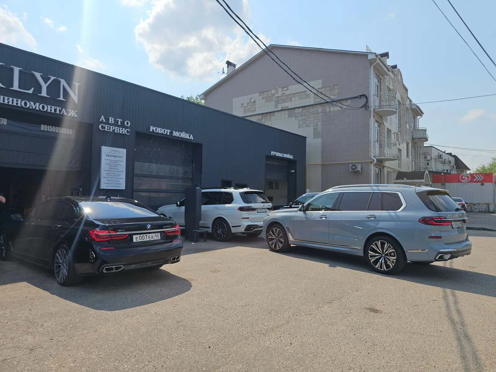
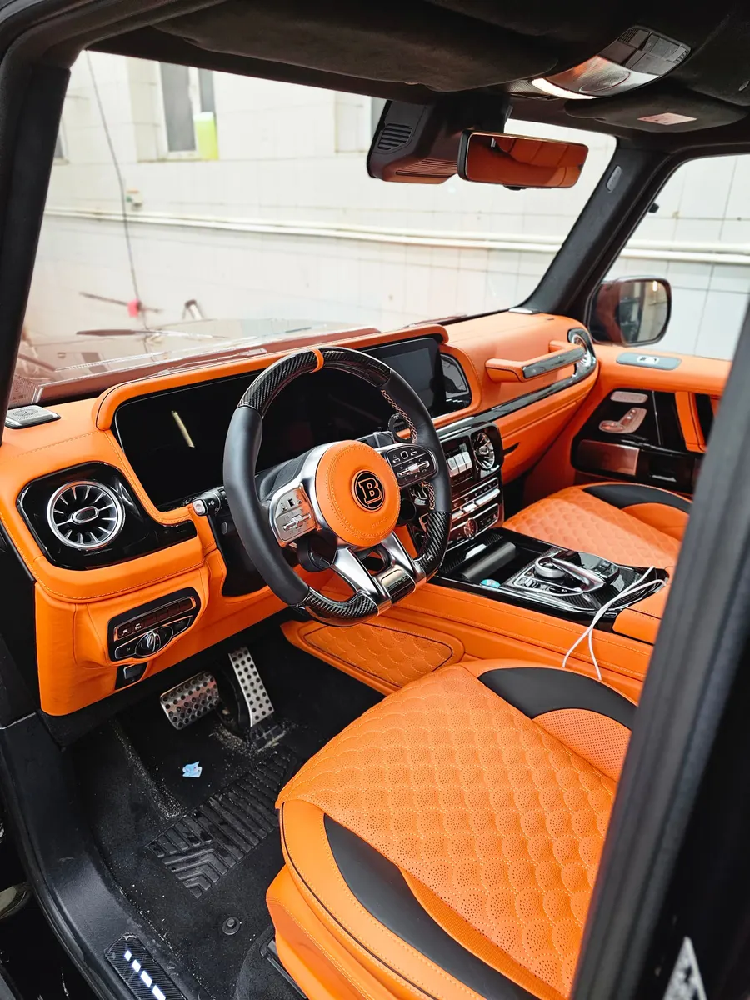
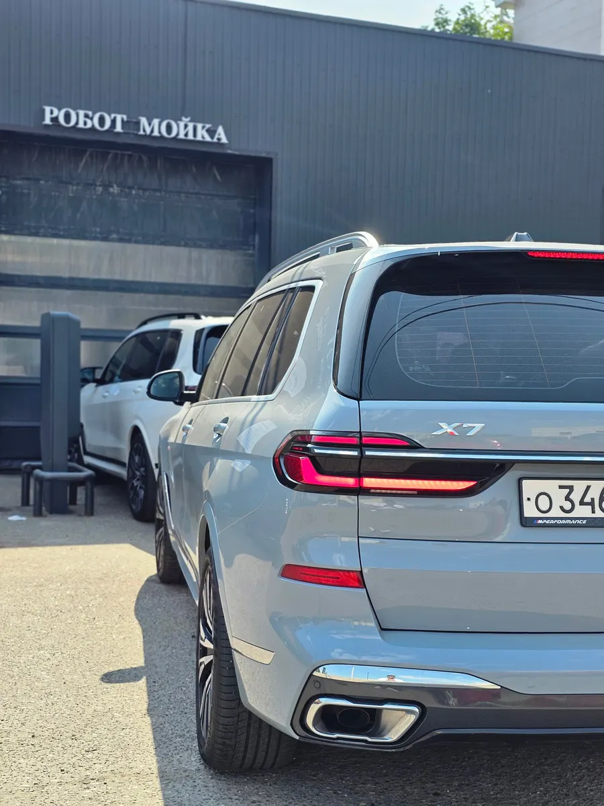
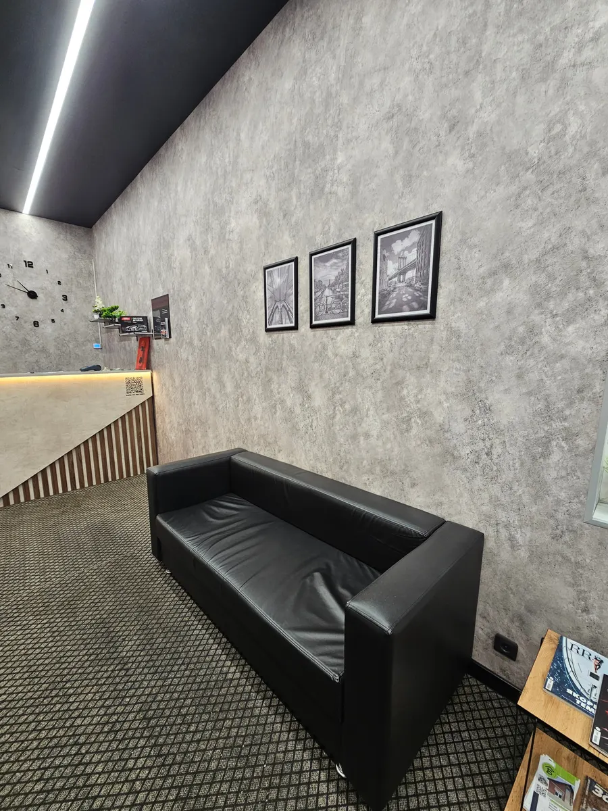

Автомойка · Круглосуточно · Обнинск
Автомойка в Обнинске, которую выбирают по отзывам
4,9 на Яндекс.Картах при 369 оценках. Робот-мойка и ручная трёхфазная — круглосуточно.
- 4,9 на Яндекс.Картах · 188 отзывов
- Круглосуточно · Борисоглебская ул., 58Б
- Робот-мойка — быстро, ручная — идеально

Как устроен визит
Входит
- Выбрали услугу и записались на сайте
- Приехали — робот-мойка без очередей
- Сотрудник контролирует процесс и помогает роботу
- По желанию: полный комплекс по салону
- Забираете чистую машину
Отдельно, если нужно
- Круглосуточно: робот-мойка всегда доступна
- Комната ожидания, чай и кофе
- LED-бокс, качественная химия
- Читаемый прайс на стене — без сюрпризов
Цены с карточки — известны до поездки
Прайс обновлён 9 ноября. Робот-мойка работает и ночью — сотрудник контролирует процесс и помогает роботу.
Прайс с карточки
- Робот-мойкапакет «Стандарт»: воск, днище550 ₽
- Трёхфазная мойка автомобиля1 500 ₽
- Гидрофобный состав (жидкий кварц)1 500 ₽
- Монтаж200 ₽
Дополнительно
- Полировка кузовалокально — от часа работыуточнить
- Комплекс по салонупылесос, коврики и не толькоуточнить
- Кузовплашка карточкиот 300 ₽
«Сколько сказали при приёме — столько и по итогу» подтверждают и клиенты. Стоимость по вашей машине называем до начала.
Четыре шага — и машина чистая
- 01
Выбрали услугу
Робот-мойка для скорости или ручная трёхфазная для идеала.
- 02
Записались на время
На сайте за минуту — или просто приезжайте, мы круглосуточно.
- 03
Моем с контролем
Человек следит за каждым этапом и дорабатывает руками.
- 04
Забираете результат
Клиенты пишут: «мойка, походу, лучшая в городе».



Что обещаем каждому клиенту
Цена известна заранее
Прайс висит на стене и на сайте — без «а это ещё доплатить».
Бережно к кузову
Качественная химия, днище и воск — машина сияет без разводов.
Быстро или идеально
Робот-мойка — когда нет времени, ручная — когда хочется идеал.
Честно о ночном режиме
Круглосуточно робот-мойка; ручная мойка — в часы работы персонала.
Отзывы с Яндекс.Карт
«Сидел читал отзывы на всех автомойках города, доверился отзывам именно этой — и знаете, не пожалел! Заехал ночью на роботмойку: 550 рублей за стандарт, промыли днище, нанесли воск. Мойка походу и правда лучшая в городе.»
Дмитрий · 26 декабря 2025
«2 в 1: кто хочет — быстро, через робот-мойку. Человек отдельно контролирует смытую грязь, в ручном режиме помогает роботу. Однозначно «да» — это место в Обнинске.»
Владимир Дикарев · 10 января
«Позвонил — сразу сказали «приезжайте». Мастер профессионально оценил проблему. Работа заняла примерно час. Первозданный вид капота восстановлен. Огромная благодарность!»
Михаил Хомченко · 31 мая
Отзывы с карточки на Яндекс.Картах, без правок.
Частые вопросы
Вы правда круглосуточные?
Да: робот-мойка доступна ночью, сотрудник помогает роботу в ручном режиме. Полная ручная мойка — в часы работы персонала; уточните по телефону +7 (965) 705-78-20.
Сколько стоит робот-мойка?
Пакет «Стандарт» — 550 ₽: днище, воск, сушка. Кузов — от 300 ₽. Трёхфазная ручная мойка — 1 500 ₽.
Что такое «робот помогает роботу»?
Это наша фишка: аппарат моет, а сотрудник контролирует смыв грязи и дорабатывает трудные места руками.
Можно ли только салон?
Да, есть полный комплекс по салону: пылесос, коврики и не только — уточняйте при записи.
Делаете полировку?
Да, в том числе локально: клиенты привозят потёртости после смолы — капот восстановили за час.
Запишитесь — или просто заезжайте, мы круглосуточно
- Адрес
- Обнинск, Борисоглебская ул., 58Б, Обнинске
- Часы
- Круглосуточно · без выходных
- Телефон
- +7 (965) 705-78-20